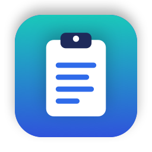

MacClipboard
A free, private clipboard manager for your Mac. It remembers everything you copy, so you can find it and paste it again in a second.
⬇️ Download for MacWhy MacClipboard
Never lose a copy
Text, links, images and files you copy are saved in a searchable history.
Paste in one click
Press ⇧⌘C, pick an item, and it is pasted straight into the field you are typing in.
Private by design
History never leaves your Mac and is encrypted on disk. No accounts, no tracking, no cloud.
Forgets your secrets
Passwords, API keys, card numbers and one-time codes are removed after 30 seconds.
Text tools
Right-click to paste as UPPERCASE, trimmed, joined lines, pretty JSON, or a link without tracking codes.
Snippets
Save text you use often, like your address or a reply, and paste it any time.
Install
- Download MacClipboard.zip and double-click it to unzip.
- Drag MacClipboard.app into your Applications folder.
- Open it. MacClipboard is free and not notarized by Apple, so macOS blocks it the first time:
- macOS 15 or newer: click Done, open System Settings → Privacy & Security, scroll down and click Open Anyway.
- macOS 14: right-click the app, choose Open, then Open again.
- When asked, allow Accessibility so MacClipboard can paste for you.
- Press ⇧⌘C. You are ready to go. Updates install themselves.
Prefer Homebrew? Run brew tap mk-manishkandel/tap, brew trust mk-manishkandel/tap, then brew install --cask macclipboard.
Shortcuts
| To do this | Press |
|---|---|
| Open your clipboard history | ⇧⌘C |
| Search | Just start typing |
| Paste the selected item | Enter or click |
| Copy without pasting | ⌥ Enter |
| Paste without formatting | ⇧⌘ Enter |
| Pin an item | ⌥P |
| Delete an item | ⌥⌫ |
| Paste as UPPERCASE, pretty JSON, clean link… | Right-click an item → Paste as |
| Show the full item and its details | ⌃ Space |
| Show only text, links, images, files or snippets | Click a tab under the search field |
| Add a snippet | Menu bar icon → New Snippet… |
| Open settings | ⌘, |
Privacy
Stays on your Mac
Your history is stored only on your Mac and encrypted with AES-256. The key lives in your Keychain.
One network request
The only thing MacClipboard downloads is its update feed from GitHub. Nothing you copy is ever sent anywhere.
Open source
Every line of code is public on GitHub, so anyone can check these promises.